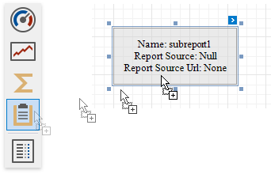

Subreport
The Subreport control is used to embed other reports into the current report.
To add this control to a report, drag the Subreport item from the Toolbox onto the report's area.

The Subreport control allows you to solve the following tasks:
Reuse reports, if there is a particular report structure (template) that needs to be included in many reports; for instance, a report header that always contains the same information (the company information, logo, date, etc.).
Use one of the following properties to provide the report source:
Report Source
Determines a report to be included as a subreport.
If report classes of the application that invoked the Report Designer are compiled into one assembly, then they are available as items in this combo box.
Report Source URL
Defines a URL of a report file (*.REPX), to use as a report source.
Double-click a subreport to open its associated report in a new Report Designer tab.